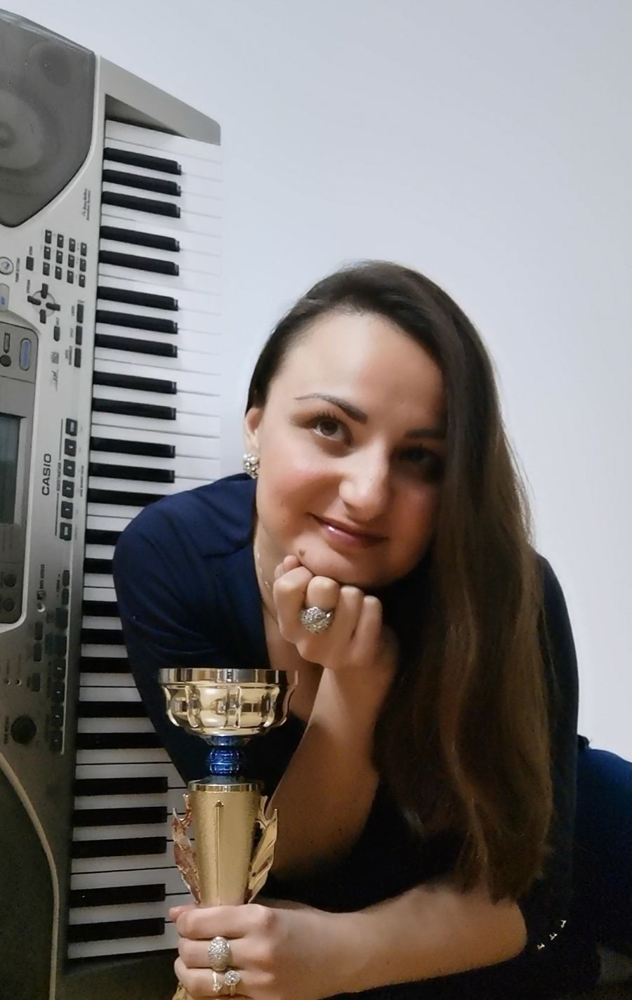

Glas, scena i 15 godina u učionici.
Vokalni pedagog, online profesorka pevanja i predavač vokalne tehnike. Živi i radi u Beču, a predaje učenicima na svim kontinentima.

MA Sanja Trifunović Gerginov profesionalno se bavi pevanjem od 2004. godine. Priznati je vokalni izvođač, sa nagradama u zemlji i inostranstvu.
Završila je master akademske studije na Fakultetu muzičke umetnosti u Beogradu. Radila je kao profesor muzičke kulture u školama u Beogradu i Jagodini i bila dugogodišnji saradnik u nastavi na Fakultetu pedagoških nauka u Jagodini.
Danas živi i radi u Beču, gde predaje i drži predavanja iz vokalne tehnike i nastavlja stručno usavršavanje. Vodi međunarodnu online školu pevanja na srpskom, engleskom i nemačkom jeziku, a govori i italijanski.
- od 2004.Profesionalni vokalni izvođač, nagrade u zemlji i inostranstvu
- FMU BeogradMaster akademske studije
- Beograd · JagodinaProfesor muzičke kulture; saradnik u nastavi na Fakultetu pedagoških nauka
- od 2014.Suosnivač KUD-a „Jovanča Micić“, predavač vokalne tehnike
- AustrijaStručno usavršavanje; predavanja iz vokalne tehnike u Beču
- u pripremiNova publikacija o osnovama vokalne tehnike
24/7 Online Singing Support
Napredak se ne dešava samo na času. Zato Sanja prati tvoje vežbanje i između časova.
Pisane smernice
Dobijaš uputstva i vežbaš kod kuće.
Tvoj snimak
Snimiš najbolji audio sa vežbanja i pošalješ ga Sanji.
Nove smernice
Sanja pregleda snimke na kraju radnog dana i brzo šalje nove smernice.
Snimljeni časovi
Svi časovi se snimaju, pa možeš da ih pogledaš ponovo.
Časove održavam online jer imam učenike na svim kontinentima.
Biraš žanr koji voliš: narodna muzika, pop, rock ili etno. Na časovima radimo na svim karakterističnim elementima tvog omiljenog žanra.
Za napredak su potrebni motivacija i spremnost da vežbaš svakog dana. Mnogi bivši učenici danas pevaju samostalno, a Sanja ostaje u kontaktu sa njima i posle završenih časova.